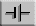

The circuit on the left is a very basic circuit. It is formed by a battery (circuit symbol: ) and a wire loop connecting one battery terminal to the other one.
Our circuit is a short circuit, which means that there is very little resistance in the circuit, resulting in a very large current. In a real life short circuit there is rapid heating and melting of the wires. Therefore, the circuit simulation will show the wires in red if there is a short circuit. (In reality, because of the melting of the wires, a short-circuit will be short-lived.)
The conventional current direction, the direction in which positive charge carriers would move, is simulated. On the outside of the battery, this direction is from the positive pole (long bar of the battery symbol) to the negative pole of the battery.